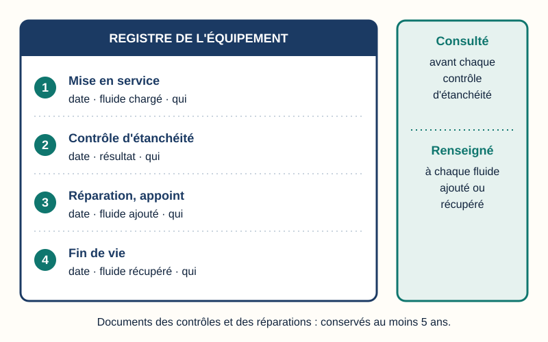
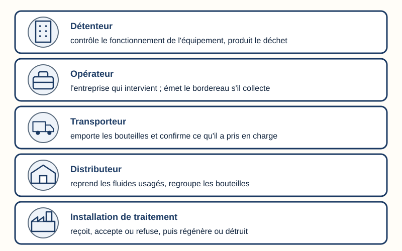
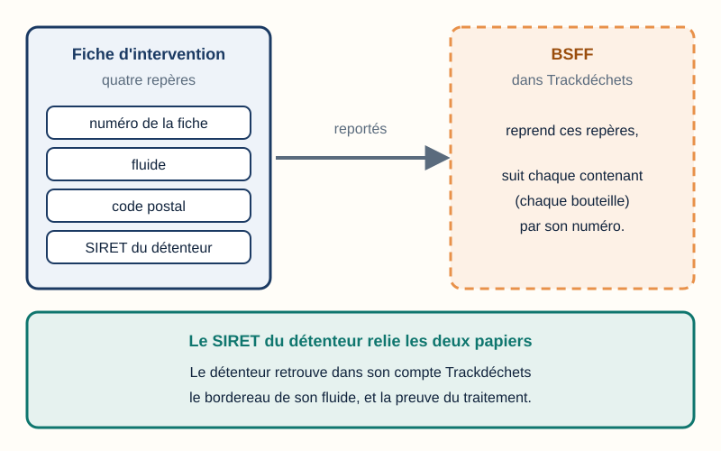
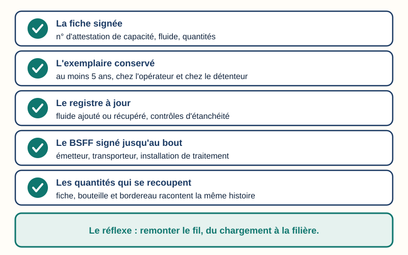
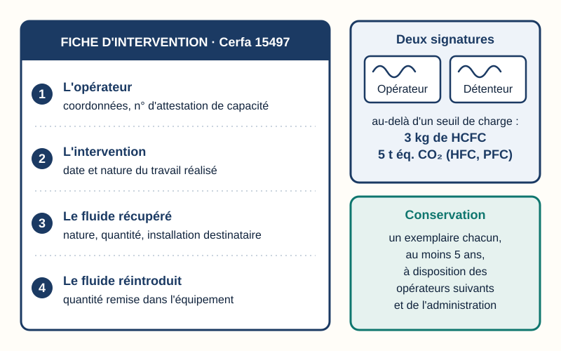
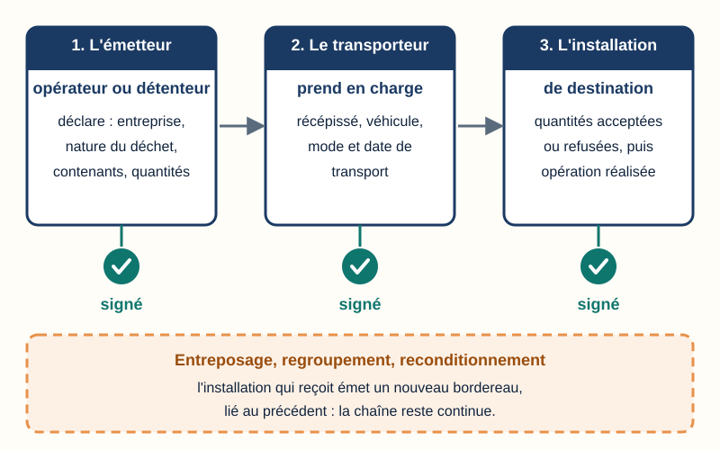

Traçabilité — suivre le fluide, du chargement à la filière
Mini-station commentée · 8 écrans et 4 questions · environ 10 minutes
Objectif
À la fin de la station, vous savez dire quels papiers accompagnent un fluide frigorigène — la fiche d'intervention, le registre de l'équipement, le bordereau de suivi dans Trackdéchets —, qui les établit et qui les signe, à quel moment un fluide récupéré devient un déchet tracé, et ce qu'un contrôle vérifie en remontant le fil.
Référentiel : TP TECVC, REAC TP-00133 — CP9 (installation de climatisation) : la recette d'une installation ne se limite pas à la machine qui tourne, elle réunit les pièces qui prouvent où est passé le fluide. Attestation d'aptitude 2025 : codes 1.00 (législation applicable), 4.02 et 4.09 (registre de l'équipement lors des contrôles d'étanchéité), 5.07 (registre : fluide récupéré ou ajouté), 5.08 (gestion, stockage et transport des réfrigérants).
Chaque écran peut être expliqué à voix haute : le bouton « Écouter » commente ce que vous voyez. Rien n'est dit qui ne soit aussi écrit.
1 / 12
Écran 1 sur 8
Un fluide n'est jamais « sans papier »
Du chargement de la machine jusqu'à l'installation qui régénère ou détruit le fluide, deux documents se relaient :
la fiche d'intervention (Cerfa 15497), établie par l'opérateur à chaque opération qui manipule le fluide ;
le bordereau de suivi des déchets de fluides frigorigènes (BSFF), dématérialisé dans Trackdéchets, dès que le fluide récupéré devient un déchet.
Pour le technicien d'études ou le chargé d'affaires, l'enjeu est concret : savoir quelles pièces réclamer à la recette, qui les signe, et ce qu'elles prouvent. Si un maillon manque, le fil se coupe.

Trait plein : la fiche d'intervention. Trait tireté : le bordereau du fluide devenu déchet.
Écran 2 sur 8
La fiche d'intervention : une opération, une fiche
L'opérateur établit une fiche pour chaque opération qui manipule le fluide (article R. 543-82 du Code de l'environnement). Elle mentionne ses coordonnées et son numéro d'attestation de capacité, la date et la nature de l'intervention, la nature, la quantité et l'installation de destination du fluide récupéré, et la quantité éventuellement réintroduite dans l'équipement (arrêté du 29 février 2016, article 11).
Deux signatures — opérateur et détenteur, ce dernier gardant l'original — pour un équipement dont la charge dépasse 3 kg de HCFC, ou 5 tonnes équivalent CO₂ de HFC ou de PFC.
Conservation : chacun garde un exemplaire au moins 5 ans à compter de la signature, et le tient à disposition des opérateurs qui interviendront ensuite et de l'administration.
Le formulaire imposé est le Cerfa n° 15497. Le texte le vise pour les catégories I à IV de l'ancien régime d'attestation ; son alignement sur les catégories de 2025 reste à vérifier sur le texte en vigueur.
Quatre rubriques à gauche ; à droite, qui signe et qui garde.
Écran 3 sur 8
Le registre : la mémoire de l'équipement
La fiche raconte une intervention ; le registre raconte toute la vie de la machine : fluide chargé, contrôles d'étanchéité, fuites et réparations, fluide ajouté, fluide récupéré à la fin.
Le règlement européen F-Gaz III, (UE) 2024/573, prévoit un registre d'équipement tenu par l'exploitant (voir la station F-Gaz 3) ; son article exact et son contenu détaillé sont à vérifier sur le texte.
L'attestation d'aptitude 2025 en fait une compétence de terrain : le consulter avant tout contrôle d'étanchéité (4.02), y consigner les données du contrôle (4.09), y noter tout fluide récupéré ou ajouté (5.07).
En droit français, le détenteur conserve au moins 5 ans les documents attestant les contrôles d'étanchéité et les réparations (article R. 543-80).

Quatre moments de la vie de la machine, quatre lignes du registre.
Écran 4 sur 8
Qui est qui dans la chaîne
Le détenteur exerce le contrôle effectif du fonctionnement technique de l'équipement, qu'il en soit propriétaire ou non (R. 543-76). C'est lui qui produit le déchet quand le fluide est collecté.
L'opérateur est l'entreprise qui intervient à titre professionnel (R. 543-76). S'il collecte le fluide chez son client, il est l'émetteur du bordereau ; sinon, c'est le détenteur.
Le transporteur prend en charge les contenants et confirme l'exactitude de ce qu'il transporte.
Le distributeur reprend les fluides usagés (R. 543-91, R. 543-92) et regroupe les bouteilles.
L'installation de traitement reçoit, accepte ou refuse, puis régénère ou détruit.

Cinq acteurs, cinq maillons.
Écran 5 sur 8
Quand le fluide devient un déchet
Quand on ouvre le circuit pour charger, mettre en service, entretenir ou contrôler l'étanchéité, la totalité du fluide retiré doit être récupérée (article R. 543-88). Ensuite, deux destins :
le fluide peut être réintroduit dans l'équipement d'où il provient : il reste un fluide, la quantité remise est notée sur la fiche, et il n'y a pas de bordereau ;
s'il ne peut pas l'être, ou si sa réutilisation est interdite, l'opérateur le remet au distributeur ou le fait traiter sous sa responsabilité (article R. 543-92) : c'est un déchet, et il entre dans Trackdéchets.
À l'autre bout de la filière, distributeurs et producteurs transmettent chaque année à l'ADEME les quantités mises sur le marché, stockées, reprises ou retraitées (article R. 543-98) : c'est le bilan annuel de la filière.

Le même fluide récupéré peut suivre deux chemins : c'est la réintroduction, ou non, qui décide.
Écran 6 sur 8
Le BSFF dans Trackdéchets : trois signatures
Depuis le 1er janvier 2023, le bordereau des déchets dangereux de fluides frigorigènes se fait dans le système électronique prévu à l'article R. 541-45 — l'application Trackdéchets (arrêté du 26 juillet 2022).
L'émetteur — l'opérateur qui collecte chez son client, ou le détenteur — déclare son identité (SIRET, raison sociale, adresse), la nature du déchet, les contenants et les quantités.
Le transporteur renseigne son récépissé, son véhicule, le mode et la date du transport, et confirme par sa signature.
L'installation de destination indique les quantités acceptées ou refusées, puis l'opération réalisée.
Chaque information est validée par signature électronique ; après validation, seuls quelques éléments restent modifiables, et chaque modification est enregistrée. En cas d'entreposage, de regroupement ou de reconditionnement, l'installation qui reçoit émet un nouveau bordereau lié au précédent.
Trois cartes, trois pastilles vertes : le bordereau n'est complet que signé jusqu'au bout.
Écran 7 sur 8
Le lien entre la fiche et le bordereau
Les deux papiers ne sont pas parallèles : ils se rejoignent. D'après la documentation publiée par l'équipe Trackdéchets (note de mars 2023, à vérifier sur la documentation en ligne), l'opérateur qui établit le bordereau y mentionne les informations clés de la ou des fiches d'intervention : numéro de fiche, fluide, code postal et SIRET du détenteur.
C'est ce SIRET qui permet à Trackdéchets de mettre le bordereau à la disposition du détenteur : il retrouve, dans son compte, la trace de son fluide jusqu'au traitement. Côté bouteilles, la plateforme gère chaque contenant par son numéro.

Quatre repères reportés de la fiche sur le bordereau : le détenteur retrouve son fluide.
Écran 8 sur 8
Bilan : ce que vérifie un contrôle
La fiche est signée, avec le numéro d'attestation de capacité, le fluide et les quantités.
L'exemplaire est conservé au moins 5 ans, chez l'opérateur et chez le détenteur, et tenu à disposition de l'administration.
Le registre est à jour : fluide ajouté ou récupéré, contrôles d'étanchéité.
Le BSFF est signé jusqu'au bout : émetteur, transporteur, installation de traitement.
Les quantités se recoupent entre la fiche, la bouteille et le bordereau.
Les manquements à ces obligations — récupération du fluide, attestation de capacité, tenue des registres — relèvent des contraventions de la 5e classe (article R. 543-123).
Le réflexe : remonter le fil d'un fluide, du chargement à la filière.

Cinq contrôles, un réflexe : remonter le fil avant qu'un autre ne le fasse.
Question 1 sur 4
Au-delà du seuil de charge, qui signe la fiche d'intervention ?

Rappel de l'écran 2 — deux signatures au-delà du seuil.
Question 2 sur 4
Le fluide récupéré est remis dans la même machine. Faut-il un BSFF ?
Rappel de l'écran 5 — deux chemins pour un même fluide.
Question 3 sur 4
Qui clôt la chaîne du bordereau, après l'émetteur et le transporteur ?

Rappel de l'écran 6 — trois cartes, trois signatures.
Question 4 sur 4
Qui peut émettre le premier bordereau d'un fluide usagé ?
Rappel de l'écran 4 — cinq acteurs, cinq maillons.
Les correspondances de la station
F-Gaz 3 — le règlement (UE) 2024/573 (même sous-ligne)
— la récupération obligatoire et le registre d'équipement, en amont de ce que devient le fluide.
Aptitude & capacité (même sous-ligne)
— le numéro d'attestation de capacité que l'opérateur inscrit sur la fiche.
Responsabilités — qui répond du déchet (sous-ligne Déchets)
— pourquoi le producteur doit pouvoir prouver, maillon par maillon, la bonne gestion de son déchet.
![À gauche, la fiche d'intervention Cerfa 15497 et ses quatre rubriques : l'opérateur avec ses coordonnées et son numéro d'attestation de capacité, l'intervention avec sa date et sa nature, le fluide récupéré avec sa nature, sa quantité et l'installation destinataire, le fluide réintroduit avec sa quantité. À droite, un encadré montre les deux signatures, opérateur et détenteur, au-delà de 3 kg de HCFC ou 5 tonnes équivalent CO2 ; un second encadré indique la conservation d'un exemplaire chacun pendant au moins 5 ans.](svg/fiche-intervention.svg)
![Trois cartes alignées, reliées par des flèches : l'émetteur, opérateur ou détenteur, qui déclare l'entreprise, la nature du déchet, les contenants et les quantités ; le transporteur, avec son récépissé, son véhicule, le mode et la date de transport ; l'installation de destination, avec les quantités acceptées ou refusées puis l'opération réalisée. Sous chaque carte, une pastille verte marque la signature. En bas, un encadré tireté : en cas de regroupement ou de reconditionnement, un nouveau bordereau lié au précédent.](svg/bsff-trackdechets.svg)